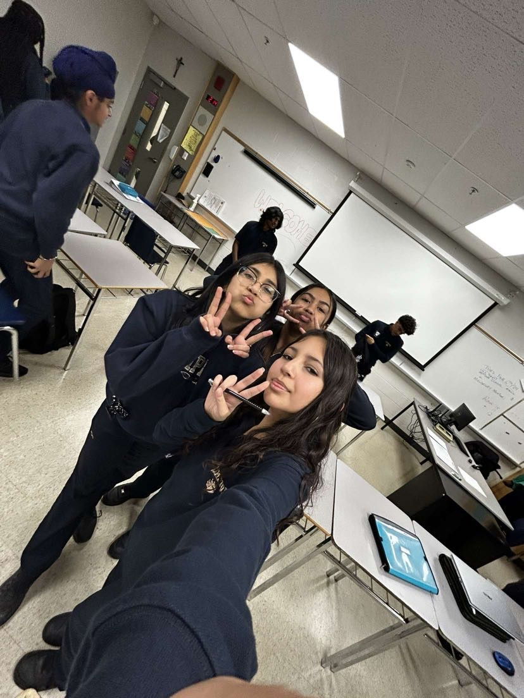

In this webpage,
I will present to you all of the skills
I have learned in this course.
first, some things about myself;
I am a grade 9 student at St.Edmund Campion.
My hobbies include things like playing sports, listening to music and more teen hobbies.
I work well with others and I enjoy working on projects.
I am responsible, intuitive and a good thinker.
In the short time we have spent in this class, I met many amazing friends.
I enjoyed learning together with these people.
Learning useful things such as spreadsheet skills, coding skills, etc
will forever be something I am going to use in life.
Hopefully these skills that I learned in my business course will make me stand out for this job position!

My Skills(Resume and Cover Letter)
Special thanks to Ms.Williams-Harvey for everything
she has taught me in my grade 9 BTT101 course. All the credit goes
to her for my skills.